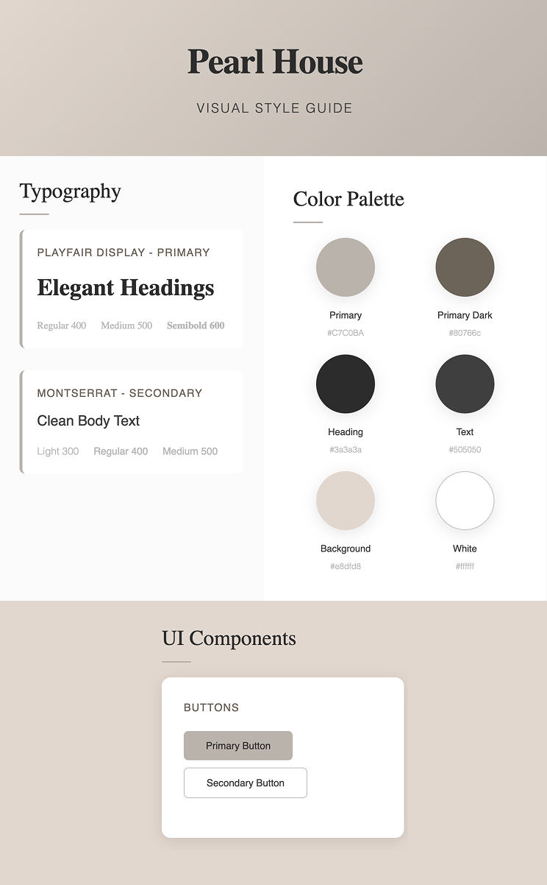

For a luxury villa in Spetses who needed a sophisticated digital presence the Pearl House Website Redesign is a complete web design and development solution that reflects premium positioning and drives bookings. Unlike the outdated original website the new design is modern, responsive, and optimized for luxury hospitality standards
Transform an outdated website into a premium digital experience that reflects the villa's luxury positioning and drives bookings
May 2025 - June 2025 | 4 weeks
Pearl House Villa, Spetses
Web Designer & Front-end Developer
HTML, CSS, JavaScript, Responsive Design, Performance optimisation
Outdated design with poor visual hierarchy, cluttered layout, and lack of mobile optimisation that failed to reflect the luxury positioning.
Modern, responsive design with elegant typography, premium imagery, and optimized user experience that drives bookings.
Taking a systematic approach to web design and development, I combined design thinking with technical expertise to create a solution that serves both user needs and business objectives. The project required balancing aesthetic appeal with performance optimisation for the luxury hospitality market.
Pearl House, a luxury villa in Spetses, had an outdated website that failed to reflect their premium positioning. The original site suffered from poor visual hierarchy, cluttered layout, inconsistent branding, and lack of mobile optimisation - critical issues for a hospitality business where first impressions directly impact booking decisions and revenue.
The outdated website was affecting the villa's ability to attract high-end guests and compete with other luxury accommodations. Poor mobile experience meant lost bookings from travelers researching on their phones, while the unprofessional appearance undermined the property's luxury positioning and premium pricing strategy.
How might we create a digital experience that accurately represents Pearl House's luxury positioning while optimizing for conversions and mobile users in the competitive Spetses hospitality market?
Through user journey mapping, I identified critical pain points:
The new information architecture streamlines user journeys from discovery to booking. I restructured content to prioritise visual storytelling, simplified navigation patterns, and created clear conversion pathways that guide users naturally toward booking actions.
The design system emphasizes clean typography, generous whitespace, and a Mediterranean-inspired color palette that evokes the tranquility and luxury of Spetses. Every element serves the dual purpose of aesthetic appeal and functional clarity.
Given that 70% of hospitality bookings now start on mobile devices, I designed with mobile-first principles. The responsive design ensures seamless experiences across all screen sizes while maintaining the luxury aesthetic that defines the brand.
I built the website from scratch using modern web technologies, prioritizing performance, accessibility, and maintainability. The development process focused on creating clean, semantic code that ensures fast loading times and excellent SEO performance.
Key technical features implemented include:
I conducted comprehensive testing across multiple devices, browsers, and user scenarios to ensure optimal performance. The testing phase included performance audits, accessibility checks, and user feedback collection to refine the final experience.
Implemented proper heading hierarchy, alt text for images, and keyboard navigation support for all interactive elements.
Ensured all text meets minimum contrast ratios while maintaining the elegant visual design aesthetic.
Added semantic HTML and ARIA labels to ensure the site is fully accessible to users with screen readers.
Built with mobile devices as the primary consideration, then enhanced for larger screens.
Tested and optimized for Chrome, Firefox, Safari, and Edge across different operating systems.
Ensured optimal experience across smartphones, tablets, and desktop computers with various screen sizes.
Implemented proper meta tags, structured data, and sitemap for improved search engine visibility.
Optimized headings, image alt text, and content structure for relevant hospitality and Spetses keywords.
Fast loading times and mobile optimisation contribute to better search engine rankings.
Let's have a talk so you can learn more about my work!
© Copyright Ioanna Lazaridou | All rights reserved.